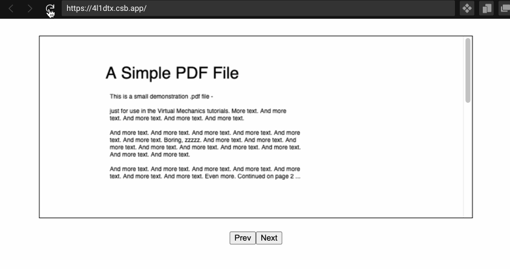
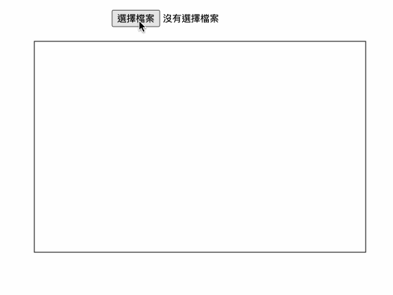

講白話一點就是把 PDF 變成 Cavas。
環境配置
由於我當初在研究時踩到了一些地雷，所以還是說明一下環境配置的方式。這邊要安裝的套件是 pdf.js。不過因為是用 React 來實作，所以會用 npm 來安裝 pdfjs-dist 這個套件。
裝好套件後，必須再透過 GlobalWorkerOptions 來做配置：
1
2
3
4
5
| import { GlobalWorkerOptions } from 'pdfjs-dist'
import pdf from './assets/sample.pdf'
const src = 'https://cdn.jsdelivr.net/npm/pdfjs-dist@<your_pack_version>/build/pdf.worker.js'
GlobalWorkerOptions.workerSrc = src
|
- 請務必把
<your_pack_version> 填入和 pdfjs-dist 相同的版號
- 請務必把
<your_pack_version> 填入和 pdfjs-dist 相同的版號
- 請務必把
<your_pack_version> 填入和 pdfjs-dist 相同的版號
如果沒有做這段配置或是你填錯版號，等一下在使用的時候就會出錯，所以請務必先做好這段配置。
讀取本機檔案
這段主要是介紹怎麼用套件提供的 methods 來讀取和渲染，要特別注意的是這段期間是「非同步」執行的。
1
2
3
4
5
6
7
8
9
10
11
12
13
14
15
16
17
18
19
20
21
22
23
24
25
26
27
28
29
30
31
32
33
34
35
36
37
38
39
40
41
42
43
44
45
46
47
48
49
50
51
52
53
54
55
56
57
58
59
60
61
62
63
64
|
import pdf from './assets/sample.pdf'
function App() {
GlobalWorkerOptions.workerSrc = workerSrc
const canvas = useRef<HTMLCanvasElement>(null)
useEffect(() => {
renderPDF(pdf, 1).catch((error) => {
console.log('error', error)
})
}, [])
async function renderPDF(src: string, page: number) {
const ctx = canvas.current!.getContext('2d')!
const doc = await getDocument(src).promise
doc.getPage(page).then((page) => {
const viewport = page.getViewport({ scale: 1 })
canvas.current!.width = viewport.width
canvas.current!.height = viewport.height
page.render({
canvasContext: ctx,
viewport
})
})
}
return (
<div className='App'>
<div className='canvas-wrapper'>
<canvas ref={canvas} id='canvas'></canvas>
</div>
<div className='btns'>
<button
onClick={() => {
// 切到第一頁
renderPDF(pdf, 1).catch((error) => {
console.log('error', error)
})
}}
>
Prev
</button>
<button
onClick={() => {
// 切到第二頁
renderPDF(pdf, 2).catch((error) => {
console.log('error', error)
})
}}
>
Next
</button>
</div>
</div>
)
}
|

實際範例可以到 codesandbox 上參考，不過我實在不知道為什麼 codesandbox 上沒辦法讀取到 pdfjs 的包…，所以在範例中是透過 cdn 的方式來引入的，這一點還請見諒。
讀取使用者上傳的檔案
在多數情況下，我們想做的通常是讓使用者自己上傳檔案並顯示到畫面上。其實主要的邏輯都跟剛剛差不多，就是把檔案內容丟給 pdfjs 來處理並且渲染到 canvas 上，但現在要多做的一件事情是：
先把使用者上傳的檔案做格式轉換後，再丟給 pdfjs 來處理
1
2
3
4
5
6
7
8
9
10
11
12
13
14
15
16
17
18
19
20
21
22
23
24
25
26
27
28
29
30
31
32
33
34
35
36
37
38
39
40
41
42
43
44
45
46
47
48
49
50
51
52
53
54
| function App() {
const canvas = useRef<HTMLCanvasElement>(null)
async function renderPDF(src: ArrayBuffer, pageIndex: number) {
const ctx = canvas.current!.getContext('2d')!
const doc = await getDocument(src).promise
doc.getPage(pageIndex).then((page) => {
const viewport = page.getViewport({ scale: 1 })
canvas.current!.width = viewport.width
canvas.current!.height = viewport.height
const renderTask = page.render({
canvasContext: ctx,
viewport
})
renderTask.promise.catch(() => alert('render error'))
})
}
function onFileSelect(event: React.ChangeEvent<HTMLInputElement>) {
const files = event.target.files!
if (files.length > 0) {
const fileReader = new FileReader()
fileReader.readAsArrayBuffer(files[0])
fileReader.onload = () => {
const typedArray = new Uint8Array(fileReader.result as ArrayBuffer)
renderPDF(typedArray, 1).catch((error) => console.log(error.message))
}
}
}
return (
<div className='App'>
<div className='btns'>
<input type='file' onChange={onFileSelect} />
</div>
<div className='canvas-wrapper'>
<canvas ref={canvas} id='canvas'></canvas>
</div>
</div>
)
}
|

附註：codesandbox
關於讀檔案的部分其實會牽扯到蠻多東西的，所以我不打算解釋太深，你只要知道每一步大概在做什麼就好了：
- 使用者上傳檔案後，用
event.target.files 拿到的會是「blob」格式的物件，我們不能直接把這個丟給 pdfjs 來解析，所以要先做一些處理。
- 利用
FileReader.readAsArrayBuffer 來讀取 blob 後，會拿到一個「ArrayBuffer」的資料。ArrayBuffer 是一種比較特別的物件，他的內容會指向某個記憶體位址（類似 C 的 Pointer），但重點是只能讀不能寫，所以必須在透過一個叫做「View」的一種資料型態來操作 ArrayBuffer（這一段真的比較抽象，所以可能要多在自己參考其他文章來想想看，像 這篇 我覺得解釋得還蠻好理解的）。
- 為了透過 View 來操作 ArrayBuffer，必須用
new Uint8Array(fileReader.result as ArrayBuffer) 來產生一個 View，而 View 在 JavaScript 中是屬於一種叫做「TypedArray」的資料型態，所以才會以此來當作變數名稱。
- 最後把這個「可操作的資料」丟給 pdfjs 後，就可以順利的讀取並渲染到 canvas 上。
雖然以這邊的例子來說，就算你直接把 ArrayBuffer 丟給 pdfjs 也可以正常渲染，但官方建議透過這種方式來減少「memory leak」 的問題。